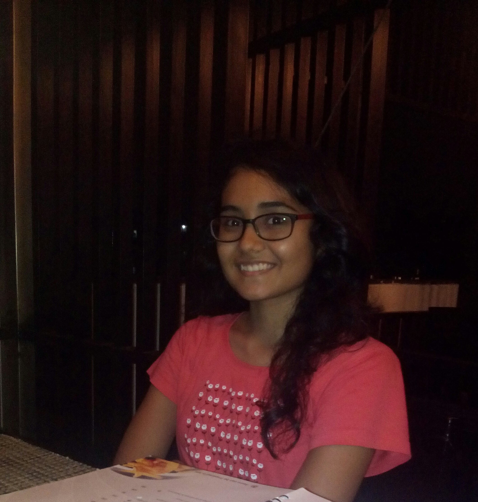

<font face="Droid Sans">
<section class="jumbotron">
    <div class="container">
      <div class="container">
      <div class="row">
        <br>
        <br>
        <br>
        <div class="col-md-5"></div>
        <div class="col-md-3">
        
      </div>
      </div>
      <div class="row">
        <br>
        <br>
        <h2 align = "center">"Tell me and I forget, Teach me and I remember, Involve me and I learn"</h2>
      </div>
    </div>
</section>
<section class="content container">

    <div class="row">

      <div class="col-md-7">
        <br>
        <br>
        <font size=10px>
          <p>Hello!</p>
        </font>
        <font size=5px><p>I'm Aaska, a programmer, developer, technophile.</p></font>
        <font size=4px>
        <p> I am a fourth year undergrad studying ICT at DA-IICT,India. I am a former intern at Morgan Stanley.
        I am a web developer, android developer, tech geek loving competitive programming and contributing to opensource.
        Exploring and painting are what interests me apart from computers and technology.
      I am the one always looking for new challenges and ready for learning something new.</p>
      </font>
      </div>


        <!-- Post List -->
        <div class="col-md-5">

            <ol class="post-list">
                {% for post in paginator.posts %}
                <li class="post-list-item">
                    <h2 class="post-list-title">
                        <a class="hvr-underline-from-center" href="{{ site.url }}{{ post.url }}">{{ post.title }}</a>
                    </h2>
                    <p class="post-list-description">
                        {{ post.excerpt | strip_html | strip }}
                    </p>
                    <p class="post-list-meta">
                        <span class="octicon octicon-calendar"></span> {{ post.date | date: "%Y/%m/%d" }}
                    </p>
                </li>
                {% endfor %}
            </ol>

            <!-- Pagination -->
            {% include pagination.html %}

            <!-- Comments -->
            {% include disqus-comments.html %}

        </div>


        <!-- <div class="col-md-4">
            {% include sidebar-popular-repo.html %}
        </div> -->

    </div>

</section>
</font>
